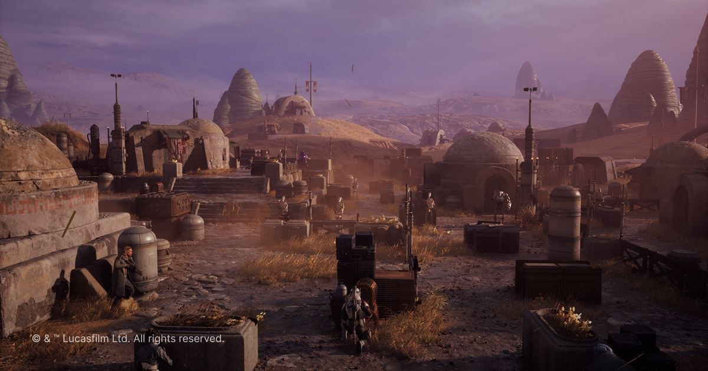

《Star Wars Zero Company》UE5 製作訪談：策略遊戲如何選擇引擎與組織大型內容
Bit Reactor 說明團隊以 UE5 製作戰術 RPG 的技術與內容選擇，提供世界、角色與迭代流程的 production case，可作為中大型專案引擎決策參考。

製作案例 ★★★★☆
完整分析
案例重點
訪談聚焦 UE5 在戰術 RPG 的內容組織與製作選擇，而不是單一 feature showcase。
可轉移經驗
可對照自己的專案規模，檢查世界、角色、工具與引擎責任是否在早期就有清楚 ownership。
導入判斷
不要直接照搬大型團隊流程；先挑一個 level/character vertical slice 比較 iteration speed 與跨部門 handoff。